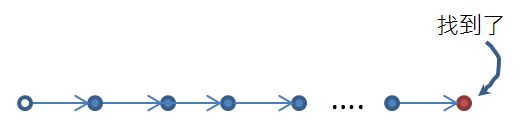
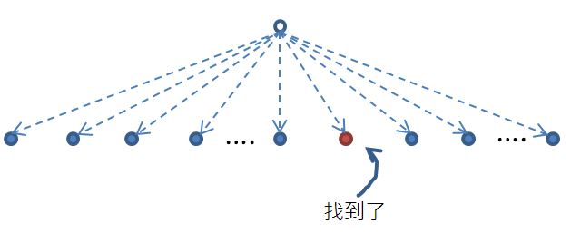
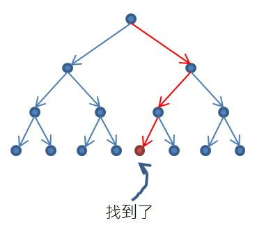

外部神秘力量
December 17, 2021既然有限狀態機、下推機都有瞎猜的神機，那麼圖靈機呢？因為每個程式語言等價於通用圖靈機，如果對程式設計已經有些基礎，其實應該接觸過瞎猜圖靈機的類似案例了。
確定 vs 不確定
例如搜尋，想從超長陣列中找到某個確實存在的元素，最基本的就是線性搜尋，從頭搜尋到尾就一定找得到，而非確定性的方式，就是瞎猜而且一定會猜中元素的索引位置！
若用箭頭來表示每次的索引決定，線性搜尋就相當於：

非確定性的方式就相當於：

上圖的虛線表示自由移動，或說是一種猜測，對於非確定性圖靈機來說，一定可以猜中，別太驚恐，這種演算法不存在，而且，就算真的有非確定性圖靈機，它也不會因此而多出確定性圖靈機沒有的運算能力。
圖靈機因為擁有隨機存取的磁帶，無法合併環境資訊來得到對應的確定性圖靈機，然而，因為磁帶是無限長度，可以將目前的環境資訊寫在磁帶某處，然後選擇其中一條規則，看看機器是否接受，若拒絕，可從磁帶回溯環境資訊，嘗試下一條規則，直到有條路徑令機器進入接受狀態，或者全部的路徑都是拒絕為止。
在程式中嘗試各種路徑，這類場景應該不陌生，然而，路徑數量的成長會是個考量，因為這代表著更多的運算時間，如果路徑數量的成長在可接受的範圍內（多項式時間內），嘗試路徑的方式就會是可行的方向之一。
若決定採用嘗試路徑的方式，為了效率，也並非盲目嘗試，例如，可以事先將陣列中的元素排序，然後採二分搜尋法，這代表著每次都嘗試所選取範圍內的中間索引，從另一角度來看，選擇中間索引就像是種猜測（說假設也行），猜測資料是平均地分佈，如果想搜尋的元素正好是排序過後居中索引的位置，那就太幸運了。

如此一來，雖然演算法本身是確定性，也能得到一定的效率增長，就像上圖，實線表示每個確定性的規則，然而，二分搜尋時並不用嘗試各種路徑，而只要嘗試紅色的路徑就可以了。
非確定性演算
既然如此，為什麼要討論非確定性，這種不存在也打造不出來的機器？只是為了探討機器的運算能力嗎？
雖然現實中，構造不出非確定性圖靈機，猜測一定就會有失敗的可能性，然而也代表著會有成功的可能性，如果成功的可能性是能夠接受的，這類演算法就會被採納。
有時，甚至需要的就是純綷的猜測能力，也就是某種隨機性，例如遊戲中的抽獎、掉寶，隨機迷宮也是，加密時需要的隨機數等，這類的非確定性可能來自於隨機演算法（嚴格來說，隨機演算法是確定性的，只是看來像是非確定性的），甚至來自於雜訊（電腦本身、大氣甚至是宇宙雜訊）。
雖然非確定性帶有隨機的成分，但是並非全然的隨機，可以透過一些條件評估、篩選，來提高成功的可能性，或者讓狀態盡可能地往設想的範圍內收斂。
回頭看看〈瞎猜的下推機〉中的非確定性判斷迴文的機器，雖然現實中打造不出來，然而，如果將人為介入考量進去，下推自動機就能判斷迴文，從另一角度來看，所謂的非確定性，就像是一種外部參與，例如，雜訊是一種外部參與，人為介入也是。
從這點來看，非確定性機器就不單純是理論上的神機，非確定性實際上代表著某種外部參與形式；就圖靈機來說，某種外部參與形式（也就是非確定性），雖然無助於增加運算能力，然而，若能降低機器設計與打造時的難度，或者是加快機器執行的效率，外部參與就是有價值的。
現實中有許多程式，一開始在實現時會需要人的參與，在能解決問題之後，進一步思考如何能減少外部參與（也就是減少非確定性），也正是現代程式設計努力的課題之一，如果在深思之後，某個外部參與確實是必要，就算那外部參與是瞎猜（隨機），只要有益於解決問題，也會是個可行的方向。
例如下棋程式，若目前算出來的路徑在評估下都差不多，然後考慮下一手的時間限制已經到了，那就從中隨機挑選一個路徑。
外部參與
若將非確定性看成是一種外部參與，只是目前還不知道那方式如何實現，就先當成是個神秘力量好了，然而值得討論與思考，找出方法後，那力量就根本不神秘了，早期有許多必須人力參與的程式，由於現代一些理論及技術的突破，現在都不需要了，就是這樣的概念（對過去的人來說，現代這些理論與技術，確實也像是神秘力量就是了）。